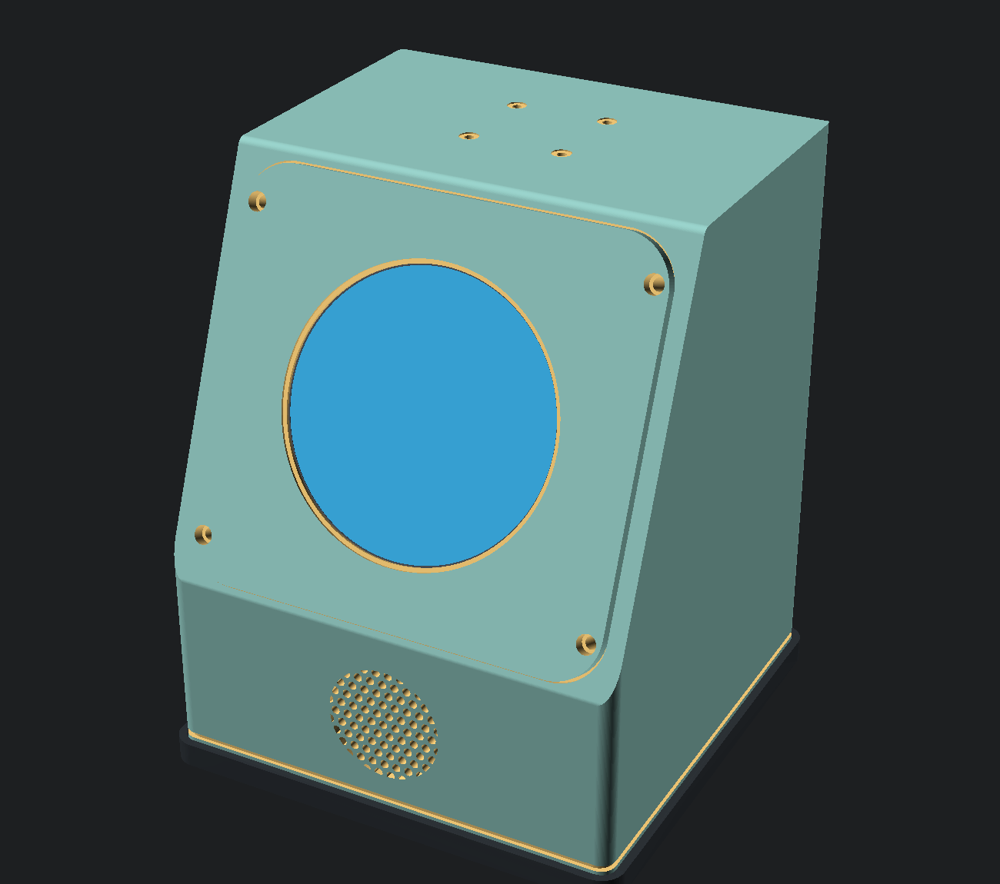
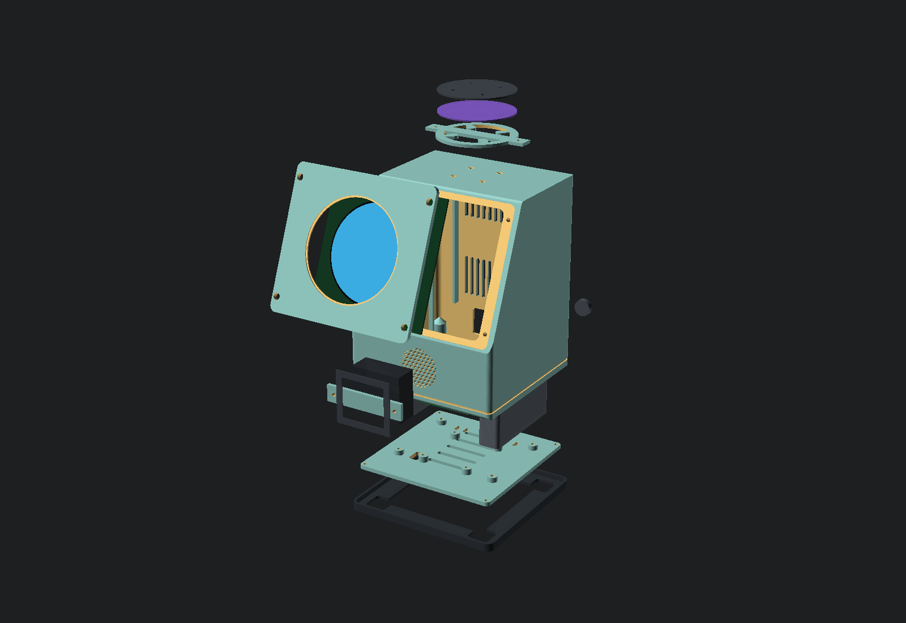
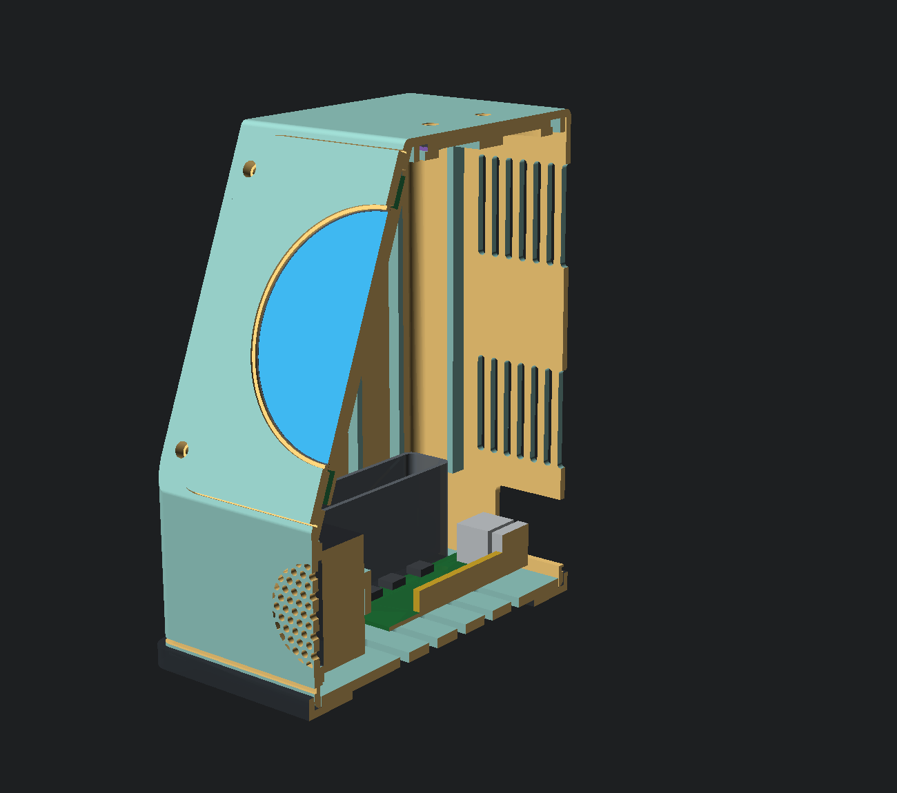
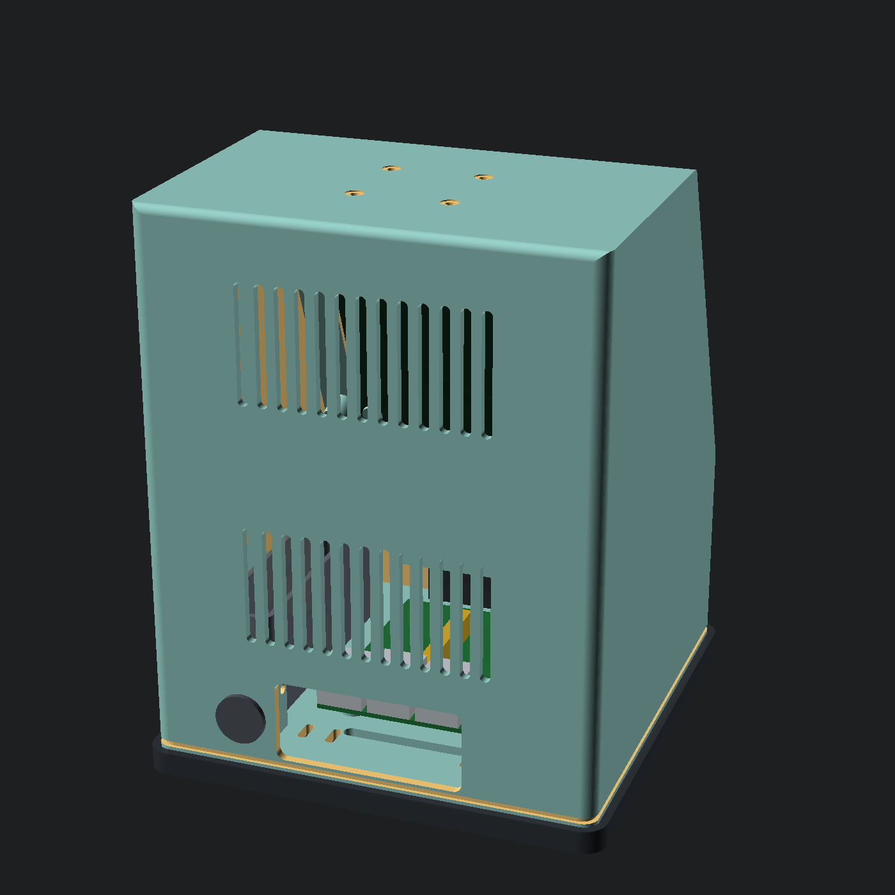
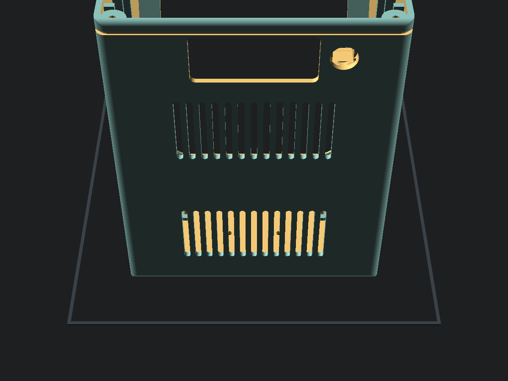
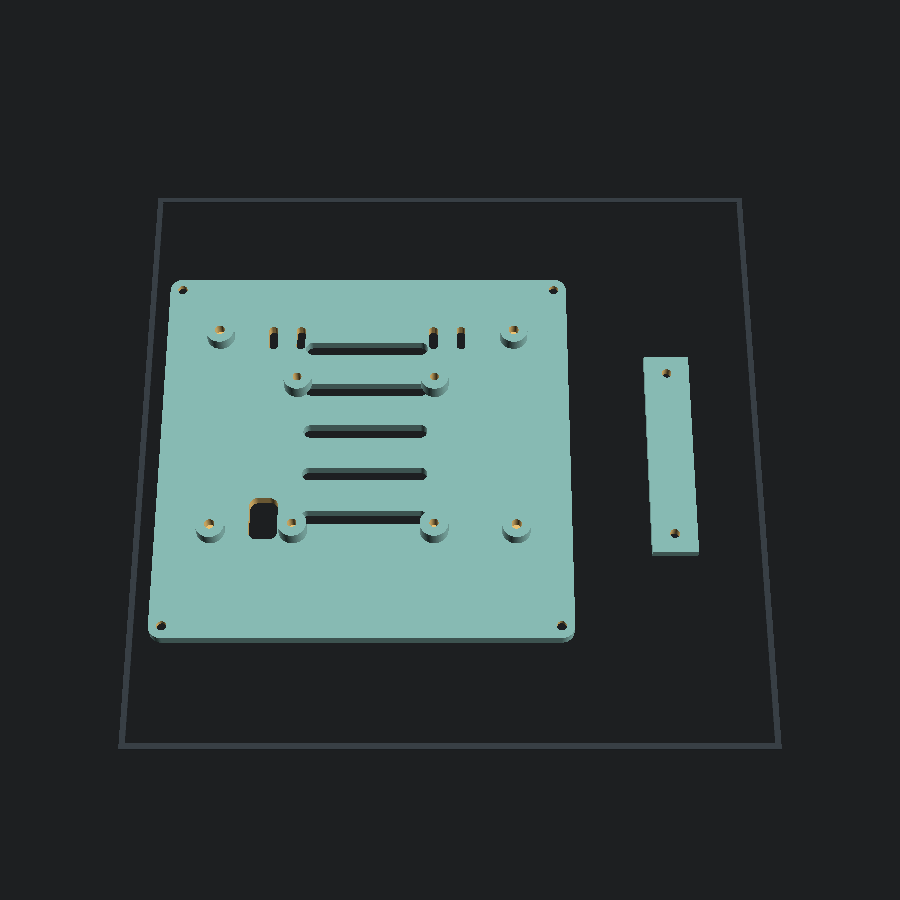
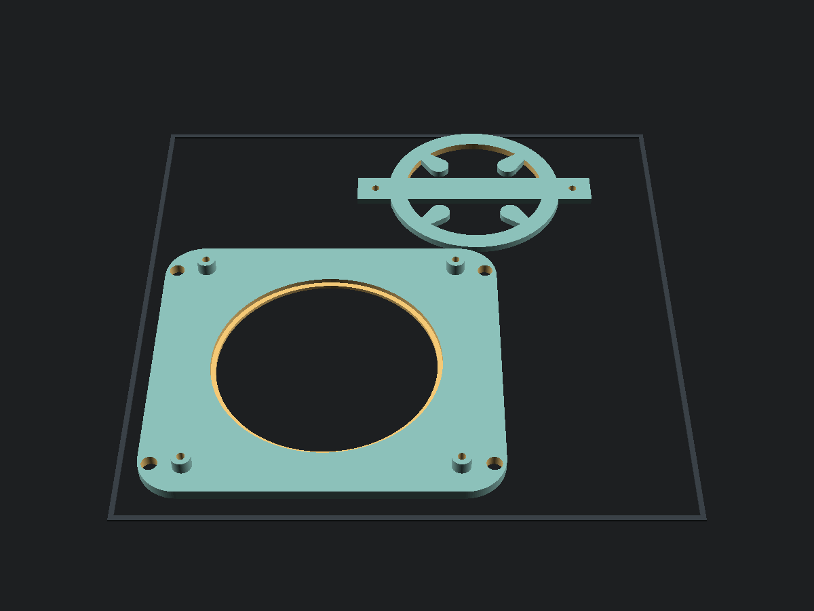
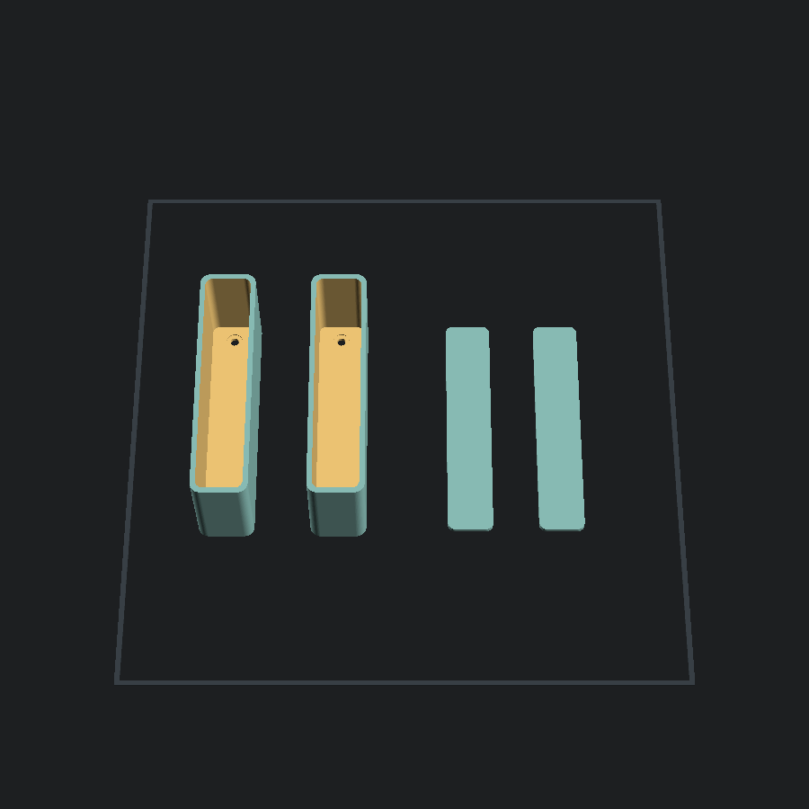
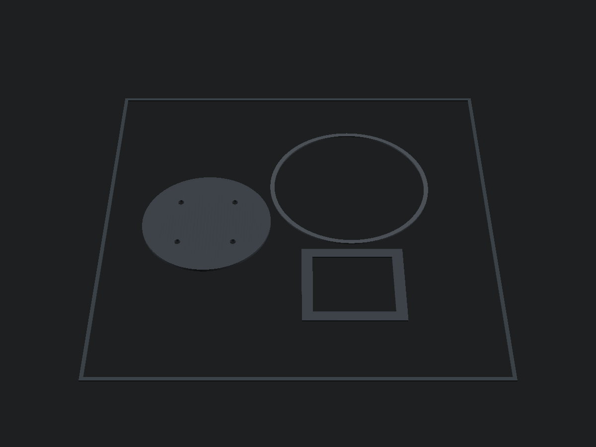
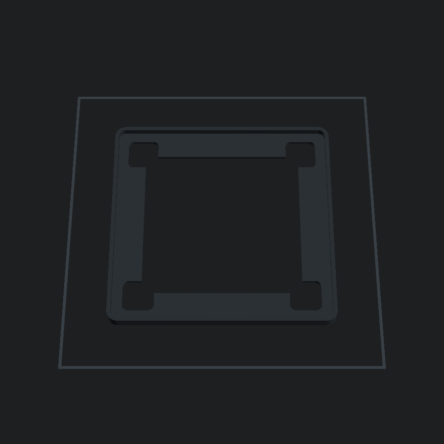

You2 · desk voice assistant · enclosure rev D · build document
One ordinary FDM printer, a soldering iron, and a box of screws. No machined parts, no laser cutting, and not one thread cut into plastic.
A 22° raked face carries an 87.6 mm round display; the vertical skirt below it carries a forward-firing driver; four microphones sit on the top surface as far from that driver as the box allows. Everything vents out the back, because a vent on the front or top is a leak path from the speaker straight into the microphones.
One number in the model is purely about how it looks — fp_r, the corner radius shared by
the faceplate and its rebate. At 6 mm the face was a hard-cornered rectangle carrying a circle inside the shell's
own rectangle; at 16 it reads as one soft shape around the eye, and the four exposed screws sit on the curve. 17
leaves under three perimeters of material outboard of a screw counterbore, and the model refuses it.
Almost nothing about the size was chosen. The display carrier sets the face length, the driver box sets the skirt, the mic array sets the depth, and the fastener flange sets the width — the model derives the rest and refuses to render if a measurement makes it unbuildable.
cad/check.py proves every part is a single connected solid; cad/fit.py
proves no two parts occupy the same space; and twenty-one asserts inside the model itself check the
things neither can see — that the display posts compress their gasket by 20 % rather than floating
above it, that the driver clamp's webs clear the driver box, that the microphone array lands on the top face
instead of overhanging its front edge, and that every plate still fits the bed. Between them they
caught twenty-three defects that renders did not show — including two Ø10 × 24 mm
horizontal cantilevers that would have needed support towers built from the bare bed inside a
sealed cavity, and a base-plate boss whose insert bore had no floor because the microSD window ran
underneath it.



Every dimension in the model came from a datasheet. Vendor listings for these parts are routinely wrong, and the enclosure is derived from them — so a bad number does not cause a tolerance problem, it causes a reprint of a 392 g part.
| Parameter | Assumed | Why it matters |
|---|---|---|
mic_circle_d | 44.0 mm | Check this before you buy anything else. Seeed describes the array as “44 mm spacing arranged in a circular layout”. If that means the pitch-circle diameter, the design works. If it means the distance between adjacent capsules — which is what “spacing” means on the linear-4 sibling — then the pitch circle is 44 × √2 = 62.2 mm, and at that value the model refuses to render. Precisely: the ports do not fall off the board — the counterbore's outer edge sits 2.3 mm inside a Ø73 PCB — but that breaks the model's 4 mm edge keep-out by 1.7 mm, and 2.3 mm of rim is not enough to bond a Ø6 membrane onto. That is not a tolerance problem, it is a different mic layout. Resolve it with calipers or an email before anything else. |
disp_carrier | 115.0 mm | Sets the raked face length, which is 107 mm of the 190 mm height. |
disp_panel_d / disp_active | 91.5 / 87.6 | Two different numbers, and vendors quote whichever flatters. The bezel overlap (panel − aperture)/2 is the only thing retaining the glass; if the panel is smaller than assumed, that goes to zero. |
disp_hole_p | 105.0 mm | The carrier's own mounting-hole pitch. The display bolts straight to the faceplate on these. |
spk_bx/by/bz | 50 × 45 × 22 | The driver's height sets the 65 mm skirt. A shorter driver is the cheapest way to shrink the whole object. |
spk_cone_d | 36 mm | The radiating diameter, not the box. Grille holes outside it are blocked and do nothing. |
mic_pcb_d | 73.0 mm | With the rake, this sets the depth. 150 mm currently leaves 13 mm spare. |
When you have measured, edit the parameters at the top of cad/you2-revD.scad and run
the gate. It checks that every part is still a single connected solid, which is the specific defect
that made the previous revision unbuildable:
python3 cad/check.py cad/you2-revD.scad
| Part | Qty | Material | Plate | Size mm | Mass |
|---|---|---|---|---|---|
| shell The body. Prints top face down. | 1 | PETG | 1 | 152×150×192 | 400 g |
| faceplate Holds the display and nothing else. The only part that touches the glass. | 1 | PETG | 3 | 140×130×10 | 56 g |
| base Floor, Pi mount, ballast anchors, microSD slot, core-board tie slots. | 1 | PETG | 2 | 145×143×10 | 92 g |
| mic clamp Presses the array onto its gasket directly over each of the four capsules. | 1 | PETG | 3 | 104×76×3 | 11 g |
| driver clamp Presses the driver onto its gasket and seat, with 20 % squash. | 1 | PETG | 2 | 78×16×4 | 5 g |
| ballast pod optional Optional. 63 cm³ each — ~101 g of dry sand, or ~283 g of steel shot. | 2 | PETG | 4 | 22×96×40 | 49 g |
| ballast lid optional Press fit. Glue the seam. | 2 | PETG | 4 | 18×92×2 | 7 g |
| mic gasket Seals four capsules to four ports AND decouples the array from the panel. | 1 | TPU | 5 | 73×73×2 | 7 g |
| panel gasket Under the display flange, so printed plastic never point-loads the glass. | 1 | TPU | 5 | 92×92×1 | 1 g |
| speaker gasket Between the driver face and its seat. Without it the driver is hard-mounted to the shell. | 1 | TPU | 5 | 56×51×1 | 1 g |
| foot optional Optional. Bottom-edge bumper and feet. Silicone bumpers are the alternative. | 1 | TPU | 6 | 158×156×8 | 45 g |
| All printed parts | PETG + TPU | 6 plates | 674 g |
The shell is the whole trick: printed top face down, the bottom opening faces up so the cavity has no ceiling, the raked face and skirt become steep self-supporting walls, and the four microphone ports print crisp against the plate. Print it any other way and you bury support inside a sealed box.
Bed contact is 141.6 cm², and the part widens as it rises — the top face is 152 × 92 mm and the full section is 152 × 150 mm by two thirds height. Use a brim.






| Setting | PETG parts | TPU parts |
|---|---|---|
| Nozzle | 0.4 mm — or 0.6 mm to halve the time | 0.4 mm |
| Layer | 0.2 mm (0.28 mm with a 0.6 nozzle) | 0.2 mm |
| Walls | 4 perimeters | 3 |
| Infill | 15 % gyroid | 15 % gyroid (the foot wants the crush plateau) |
| Supports | None — see the note below | None |
| Brim | 5 mm on the shell | 5 mm |
| Speed | normal | ≤ 25 mm/s — slow enough for a Bowden machine |
| Item | Qty | $ |
|---|---|---|
| Raspberry Pi 5, 2 GB required The 8 GB SKU only ever existed to hold a local model. Same silicon. | 1 | $65.00 |
| Waveshare 3.4″ DSI round, 800×800 (C) required Confirm the part number — an older near-identical 3.4″ uses a different overlay name. | 1 | $87.00 |
| 22-pin → 15-pin DSI FFC, 300 mm required The display box ships 15-pin only. A Pi 5 needs 22-pin. Wrong cable = black screen, no error. | 1 | $2.00 |
| Seeed reSpeaker Flex XVF3800 Circular-4 required 4 mics on a 73 mm round PCB. Not the $25 Lite — the enclosure has four ports. | 1 | $55.00 |
| Enclosed speaker, 4 Ω, ≈50 × 45 × 22 mm required Measure it. Its height sets the 65 mm skirt, which is a third of the object. | 1 | $3.00 |
| Official Raspberry Pi 27 W USB-C PSU required Non-negotiable. Without RPi's own PD profile the Pi caps all USB at 600 mA. | 1 | $12.00 |
| microSD 32 GB A2 required Or a pSLC industrial card for +$9 — this thing writes a database 24/7. | 1 | $9.00 |
| Pi 5 passive heatsink required Not the active cooler. A fan 60 mm from the mics deletes the wake word. | 1 | $7.00 |
| USB-A → USB-C cable, 0.3 m required Pi to reSpeaker. Short, so it can be tied down. | 1 | $5.00 |
| USB flash drive, 16 GB required Off-card backup. The memory store must not share a failure domain with its own backup. | 1 | $6.00 |
| Electronics | $251.00 |
Every thread in this build is a brass heat-set insert. Nothing is tapped into plastic, because PETG at a 45 °C interior sits close enough to its glass transition that a tapped thread relaxes its preload over weeks.
| Item | Qty | $ |
|---|---|---|
| PETG filament, 1 kg required Uses 606 g. Buy two — the shell is a 30 h single point of failure and a runout wastes the lot. | 2 | $44.00 |
| TPU 95A filament, 0.5 kg required Uses 56 g — only 9 g if you skip the foot. | 1 | $18.00 |
| Heat-set inserts, M3 standard — 4.6 OD × 5.8 required Faceplate ×4, base corners ×4, driver clamp ×2. The model bores these at Ø4.0, not 4.6 — a heat-set insert needs the hole smaller than its own diameter or it spins out. | 10 | — |
| Heat-set inserts, M3 short — 4.0 OD × 4.0 required Mic clamp ×2, ballast pods ×4. Bored Ø3.6. | 6 | — |
| Heat-set inserts, M2.5 — 3.5 OD × 5.0 required Display carrier ×4, Pi standoffs ×4. Bored Ø3.2. An assortment kit covers all three sizes. | 8 | $9.00 |
| M3 × 10 socket cap required Faceplate → shell ×4 (visible, so buy decent ones) and driver clamp ×2. | 6 | — |
| M3 × 10 countersunk required Base → shell, underside. | 4 | — |
| M3 × 8 socket cap required Ballast pods ×4. | 4 | $8.00 |
| M3 × 6 socket cap required Mic clamp. Not ×8 — an ×8 bottoms in the blind bore 0.3 mm before the clamp lands, which is exactly the gasket squash the seal depends on. | 2 | — |
| M2.5 × 6 pan head required Display carrier ×4, Pi ×4. | 8 | — |
| M2.5 male–female standoff, 6 mm required Pi, into the base inserts. | 4 | $4.00 |
| Rubber grommet, 14 mm hole required The PSU cable passes through it. No coupler on a 5 A rail. | 1 | $2.00 |
| GORE GAW3343.06.0 acoustic vent, ID 3.0 / OD 6.0 required Over the mic ports. <2 dB at 1 kHz, IP68, adhesive side toward the housing. An earlier draft named GAW331 — that series does not exist. | 5 | $6.00 |
| Acoustic mesh fabric, small piece required Behind the speaker grille. | 1 | $3.00 |
| Silicone bumpers, 60A optional Only if you skip the TPU foot. | 4 | $3.00 |
| Dry sand, ~250 g optional Ballast pods. Play sand, oven-dried. Steel shot if you want ~600 g instead. | 1 | $0.00 |
| Cable ties + heatshrink required | 1 | $3.00 |
| Mechanical and consumables | $100.00 |
| Joint | Insert | Screw | Qty |
|---|---|---|---|
| Faceplate → shell | M3 4.6 × 5.8 | M3 × 10 socket | 4 |
| Base → shell | M3 4.6 × 5.8 | M3 × 10 c'sunk | 4 |
| Driver clamp → shell skirt | M3 4.6 × 5.8 | M3 × 10 socket | 2 |
| Mic clamp → shell ceiling | M3 4.0 × 4.0 | M3 × 6 socket | 2 |
| Ballast pods → base | M3 4.0 × 4.0 | M3 × 8 socket | 4 |
| Display carrier → faceplate | M2.5 3.2 × 4.0 | M2.5 × 6 | 4 |
| Pi standoffs → base | M2.5 3.2 × 4.0 | 6 mm M–F standoff | 4 |
| Pi → standoffs | — | M2.5 × 6 | 4 |
The order matters in one specific way: the display never enters the shell. It bolts to the faceplate, outside, and the faceplate goes on last. That is the whole reason the face is a separate part.
disp_panel_d.| Job | What comes off |
|---|---|
| microSD | Nothing — slot in the base, under the board's USB-C edge. |
| Driver clamp screws | Nothing — both are on a straight line through the rear I/O window. |
| Display or FFC | Four faceplate screws, from the front. |
| Driver, mic array, Pi | Four base screws, from below. |
| Everything | Eight screws. |
Everything is USB, a DSI ribbon, a JST plug and screws. The optional light bar is the only soldering in the entire project, and it is the reason the default has none.
| Group | Note | $ |
|---|---|---|
| Electronics | Pi, display, mic array, driver, PSU, SD, heatsink, cables | 251.00 |
| Filament | 676 g PETG + 54 g TPU. Two PETG spools, not one — see the note. | 62.00 |
| Fasteners & inserts | 24 inserts, 24 screws, 4 standoffs | 21.00 |
| Consumables | Grommet, membranes, mesh, bumpers, ties | 17.00 |
| Parts total | plus shipping from 3–4 vendors, realistically ≈ $410 delivered | 351.00 |
The single biggest correction against the project's original $248 costing is the microphone array: that bill of materials buys a two-microphone rectangular board for an enclosure built around a four-microphone round one. They are not interchangeable, and the difference is $30.
LED_BAR = true re-sizes the model if you
disagree later.The geometry is gated — every part exports as one connected solid, every plate fits the bed, and the model asserts its own buildability. None of that is the same as having made one.
mic_circle_d is 44. The cheapest thing in the project to check and the most expensive to get wrong.